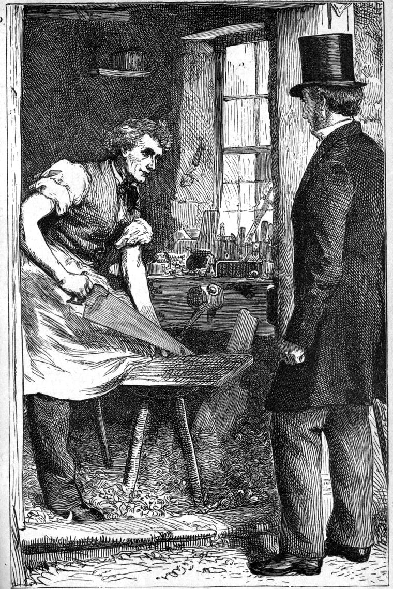

On the way back, my thoughts were still occupied with the woman I had seen in the little shop. The old man-of-war’s man was probably the nobler being of the two; and if I had had to choose between them, I should no doubt have chosen him. But I had not to choose between them; I had only to think about them; and I thought a great deal more about the one I could not understand than the one I could understand. For Old Rogers wanted little help from me; whereas the other was evidently a soul in pain, and therefore belonged to me in peculiar right of my office; while the readiest way in which I could justify to myself the possession of that office was to make it a shepherding of the sheep. So I resolved to find out what I could about her, as one having a right to know, that I might see whether I could not help her. From herself it was evident that her secret, if she had one, was not to be easily gained; but even the common reports of the village would be some enlightenment to the darkness I was in about her.
As I went again through the village, I observed a narrow lane striking off to the left, and resolved to explore in that direction. It led up to one side of the large house of which I have already spoken. As I came near, I smelt what has been to me always a delightful smell—that of fresh deals under the hands of the carpenter. In the scent of those boards of pine is enclosed all the idea the tree could gather of the world of forest where it was reared. It speaks of many wild and bright but chiefly clean and rather cold things. If I were idling, it would draw me to it across many fields.—Turning a corner, I heard the sound of a saw. And this sound drew me yet more. For a carpenter’s shop was the delight of my boyhood; and after I began to read the history of our Lord with something of that sense of reality with which we read other histories, and which, I am sorry to think, so much of the well-meant instruction we receive in our youth tends to destroy, my feeling about such a workshop grew stronger and stronger, till at last I never could go near enough to see the shavings lying on the floor of one, without a spiritual sensation such as I have in entering an old church; which sensation, ever since having been admitted on the usual conditions to a Mohammedan mosque, urges me to pull off, not only my hat, but my shoes likewise. And the feeling has grown upon me, till now it seems at times as if the only cure in the world for social pride would be to go for five silent minutes into a carpenter’s shop. How one can think of himself as above his neighbours, within sight, sound, or smell of one, I fear I am getting almost unable to imagine, and one ought not to get out of sympathy with the wrong. Only as I am growing old now, it does not matter so much, for I daresay my time will not be very long.
So I drew near to the shop, feeling as if the Lord might be at work there at one of the benches. And when I reached the door, there was my pale-faced hearer of the Sunday afternoon, sawing a board for a coffin-lid.
As my shadow fell across and darkened his work, he lifted his head and saw me.
I could not altogether understand the expression of his countenance as he stood upright from his labour and touched his old hat with rather a proud than a courteous gesture. And I could not believe that he was glad to see me, although he laid down his saw and advanced to the door. It was the gentleman in him, not the man, that sought to make me welcome, hardly caring whether I saw through the ceremony or not. True, there was a smile on his lips, but the smile of a man who cherishes a secret grudge; of one who does not altogether dislike you, but who has a claim upon you—say, for an apology, of which claim he doubts whether you know the existence. So the smile seemed tightened, and stopped just when it got half-way to its width, and was about to become hearty and begin to shine.
“May I come in?” I said.
“Come in, sir,” he answered.

“I am glad I have happened to come upon you by accident,” I said.
He smiled as if he did not quite believe in the accident, and considered it a part of the play between us that I should pretend it. I hastened to add—
“I was wandering about the place, making some acquaintance with it, and with my friends in it, when I came upon you quite unexpectedly. You know I saw you in church on Sunday afternoon.”
“I know you saw me, sir,” he answered, with a motion as if to return to his work; “but, to tell the truth, I don’t go to church very often.”
I did not quite know whether to take this as proceeding from an honest fear of being misunderstood, or from a sense of being in general superior to all that sort of thing. But I felt that it would be of no good to pursue the inquiry directly. I looked therefore for something to say.
“Ah! your work is not always a pleasant one,” I said, associating the feelings of which I have already spoken with the facts before me, and looking at the coffin, the lower part of which stood nearly finished upon trestles on the floor.
“Well, there are unpleasant things in all trades,” he answered. “But it does not matter,” he added, with an increase of bitterness in his smile.
“I didn’t mean,” I said, “that the work was unpleasant—only sad. It must always be painful to make a coffin.”
“A joiner gets used to it, sir, as you do to the funeral service. But, for my part, I don’t see why it should be considered so unhappy for a man to be buried. This isn’t such a good job, after all, this world, sir, you must allow.”
“Neither is that coffin,” said I, as if by a sudden inspiration.
The man seemed taken aback, as Old Rogers might have said. He looked at the coffin and then looked at me.
“Well, sir,” he said, after a short pause, which no doubt seemed longer both to him and to me than it would have seemed to any third person, “I don’t see anything amiss with the coffin. I don’t say it’ll last till doomsday, as the gravedigger says to Hamlet, because I don’t know so much about doomsday as some people pretend to; but you see, sir, it’s not finished yet.”
“Thank you,” I said; “that’s just what I meant. You thought I was hasty in my judgment of your coffin; whereas I only said of it knowingly what you said of the world thoughtlessly. How do you know that the world is finished anymore than your coffin? And how dare you then say that it is a bad job?”
The same respectfully scornful smile passed over his face, as much as to say, “Ah! it’s your trade to talk that way, so I must not be too hard upon you.”
“At any rate, sir,” he said, “whoever made it has taken long enough about it, a person would think, to finish anything he ever meant to finish.”
“One day is with the Lord as a thousand years, and a thousand years as one day,” I said.
“That’s supposing,” he answered, “that the Lord did make the world. For my part, I am half of a mind that the Lord didn’t make it at all.”
“I am very glad to hear you say so,” I answered.
Hereupon I found that we had changed places a little. He looked up at me. The smile of superiority was no longer there, and a puzzled questioning, which might indicate either “Who would have expected that from you?” or, “What can he mean?” or both at once, had taken its place. I, for my part, knew that on the scale of the man’s judgment I had risen nearer to his own level. As he said nothing, however, and I was in danger of being misunderstood, I proceeded at once.
“Of course it seems to me better that you should not believe God had done a thing, than that you should believe He had not done it well!”
“Ah! I see, sir. Then you will allow there is some room for doubting whether He made the world at all?”
“Yes; for I do not think an honest man, as you seem to me to be, would be able to doubt without any room whatever. That would be only for a fool. But it is just possible, as we are not perfectly good ourselves—you’ll allow that, won’t you?”
“That I will, sir; God knows.”
“Well, I say—as we’re not quite good ourselves, it’s just possible that things may be too good for us to do them the justice of believing in them.”
“But there are things, you must allow, so plainly wrong!”
“So much so, both in the world and in myself, that it would be to me torturing despair to believe that God did not make the world; for then, how would it ever be put right? Therefore I prefer the theory that He has not done making it yet.”
“But wouldn’t you say, sir, that God might have managed it without so many slips in the making as your way would suppose? I should think myself a bad workman if I worked after that fashion.”
“I do not believe that there are any slips. You know you are making a coffin; but are you sure you know what God is making of the world?”
“That I can’t tell, of course, nor anybody else.”
“Then you can’t say that what looks like a slip is really a slip, either in the design or in the workmanship. You do not know what end He has in view; and you may find some day that those slips were just the straight road to that very end.”
“Ah! maybe. But you can’t be sure of it, you see.”
“Perhaps not, in the way you mean; but sure enough, for all that, to try it upon life—to order my way by it, and so find that it works well. And I find that it explains everything that comes near it. You know that no engineer would be satisfied with his engine on paper, nor with any proof whatever except seeing how it will go.”
He made no reply.
It is a principle of mine never to push anything over the edge. When I am successful, in any argument, my one dread is of humiliating my opponent. Indeed I cannot bear it. It humiliates me. And if you want him to think about anything, you must leave him room, and not give him such associations with the question that the very idea of it will be painful and irritating to him. Let him have a hand in the convincing of himself. I have been surprised sometimes to see my own arguments come up fresh and green, when I thought the fowls of the air had devoured them up. When a man reasons for victory and not for the truth in the other soul, he is sure of just one ally, the same that Faust had in fighting Gretchen’s brother—that is, the Devil. But God and good men are against him. So I never follow up a victory of that kind, for, as I said, the defeat of the intellect is not the object in fighting with the sword of the Spirit, but the acceptance of the heart. In this case, therefore, I drew back.
“May I ask for whom you are making that coffin?”
“For a sister of my own, sir.”
“I’m sorry to hear that.”
“There’s no occasion. I can’t say I’m sorry, though she was one of the best women I ever knew.”
“Why are you not sorry, then? Life’s a good thing in the main, you will allow.”
“Yes, when it’s endurable at all. But to have a brute of a husband coming home at any hour of the night or morning, drunk upon the money she had earned by hard work, was enough to take more of the shine out of things than church-going on Sundays could put in again, regular as she was, poor woman! I’m as glad as her brute of a husband, that she’s out of his way at last.”
“How do you know he’s glad of it?”
“He’s been drunk every night since she died.”
“Then he’s the worse for losing her?”
“He may well be. Crying like a hypocrite, too, over his own work!”
“A fool he must be. A hypocrite, perhaps not. A hypocrite is a terrible name to give. Perhaps her death will do him good.”
“He doesn’t deserve to be done any good to. I would have made this coffin for him with a world of pleasure.”
“I never found that I deserved anything, not even a coffin. The only claim that I could ever lay to anything was that I was very much in want of it.”
The old smile returned—as much as to say, “That’s your little game in the church.” But I resolved to try nothing more with him at present; and indeed was sorry that I had started the new question at all, partly because thus I had again given him occasion to feel that he knew better than I did, which was not good either for him or for me in our relation to each other.
“This has been a fine old room once,” I said, looking round the workshop.
“You can see it wasn’t a workshop always, sir. Many a grand dinner-party has sat down in this room when it was in its glory. Look at the chimney-piece there.”
“I have been looking at it,” I said, going nearer.
“It represents the four quarters of the world, you see.”
I saw strange figures of men and women, one on a kneeling camel, one on a crawling crocodile, and others differently mounted; with various besides of Nature’s bizarre productions creeping and flying in stone-carving over the huge fire-place, in which, in place of a fire, stood several new and therefore brilliantly red cart-wheels. The sun shone through the upper part of a high window, of which many of the panes were broken, right in upon the cart-wheels, which, glowing thus in the chimney under the sombre chimney-piece, added to the grotesque look of the whole assemblage of contrasts. The coffin and the carpenter stood in the twilight occasioned by the sharp division of light made by a lofty wing of the house that rose flanking the other window. The room was still wainscotted in panels, which, I presume, for the sake of the more light required for handicraft, had been washed all over with white. At the level of labour they were broken in many places. Somehow or other, the whole reminded me of Albert Durer’s “Melencholia.”
Seeing I was interested in looking about his shop, my new friend—for I could not help feeling that we should be friends before all was over, and so began to count him one already—resumed the conversation. He had never taken up the dropped thread of it before.
“Yes, sir,” he said; “the owners of the place little thought it would come to this—the deals growing into a coffin there on the spot where the grand dinner was laid for them and their guests! But there is another thing about it that is odder still; my son is the last male”—
Here he stopped suddenly, and his face grew very red. As suddenly he resumed—
“I’m not a gentleman, sir; but I will tell the truth. Curse it!—I beg your pardon, sir,”—and here the old smile—“I don’t think I got that from THEIR side of the house.—My son’s NOT the last male descendant.”
Here followed another pause.
As to the imprecation, I knew better than to take any notice of a mere expression of excitement under a sense of some injury with which I was not yet acquainted. If I could get his feelings right in regard to other and more important things, a reform in that matter would soon follow; whereas to make a mountain of a molehill would be to put that very mountain between him and me. Nor would I ask him any questions, lest I should just happen to ask him the wrong one; for this parishioner of mine evidently wanted careful handling, if I would do him any good. And it will not do any man good to fling even the Bible in his face. Nay, a roll of bank-notes, which would be more evidently a good to most men, would carry insult with it if presented in that manner. You cannot expect people to accept before they have had a chance of seeing what the offered gift really is.
After a pause, therefore, the carpenter had once more to recommence, or let the conversation lie. I stood in a waiting attitude. And while I looked at him, I was reminded of some one else whom I knew—with whom, too, I had pleasant associations—though I could not in the least determine who that one might be.
“It’s very foolish of me to talk so to a stranger,” he resumed.
“It is very kind and friendly of you,” I said, still careful to make no advances. “And you yourself belong to the old family that once lived in this old house?”
“It would be no boast to tell the truth, sir, even if it were a credit to me, which it is not. That family has been nothing but a curse to ours.”
I noted that he spoke of that family as different from his, and yet implied that he belonged to it. The explanation would come in time. But the man was again silent, planing away at half the lid of his sister’s coffin. And I could not help thinking that the closed mouth meant to utter nothing more on this occasion.
“I am sure there must be many a story to tell about this old place, if only there were any one to tell them,” I said at last, looking round the room once more.—“I think I see the remains of paintings on the ceiling.”
“You are sharp-eyed, sir. My father says they were plain enough in his young days.”
“Is your father alive, then?”
“That he is, sir, and hearty too, though he seldom goes out of doors now. Will you go up stairs and see him? He’s past ninety, sir. He has plenty of stories to tell about the old place—before it began to fall to pieces like.”
“I won’t go to-day,” I said, partly because I wanted to be at home to receive any one who might call, and partly to secure an excuse for calling again upon the carpenter sooner than I should otherwise have liked to do. “I expect visitors myself, and it is time I were at home. Good morning.”
“Good morning, sir.”
And away home I went with a new wonder in my brain. The man did not seem unknown to me. I mean, the state of his mind woke no feeling of perplexity in me. I was certain of understanding it thoroughly when I had learned something of his history; for that such a man must have a history of his own was rendered only the more probable from the fact that he knew something of the history of his forefathers, though, indeed, there are some men who seem to have no other. It was strange, however, to think of that man working away at a trade in the very house in which such ancestors had eaten and drunk, and married and given in marriage. The house and family had declined together—in outward appearance at least; for it was quite possible both might have risen in the moral and spiritual scale in proportion as they sank in the social one. And if any of my readers are at first inclined to think that this could hardly be, seeing that the man was little, if anything, better than an infidel, I would just like to hold one minute’s conversation with them on that subject. A man may be on the way to the truth, just in virtue of his doubting. I will tell you what Lord Bacon says, and of all writers of English I delight in him: “So it is in contemplation: if a man will begin with certainties, he shall end in doubts; but if he will be content to begin with doubts, he shall end in certainties.” Now I could not tell the kind or character of this man’s doubt; but it was evidently real and not affected doubt; and that was much in his favour. And I couid see that he was a thinking man; just one of the sort I thought I should get on with in time, because he was honest—notwithstanding that unpleasant smile of his, which did irritate me a little, and partly piqued me into the determination to get the better of the man, if I possibly could, by making friends with him. At all events, here was another strange parishioner. And who could it be that he was like?